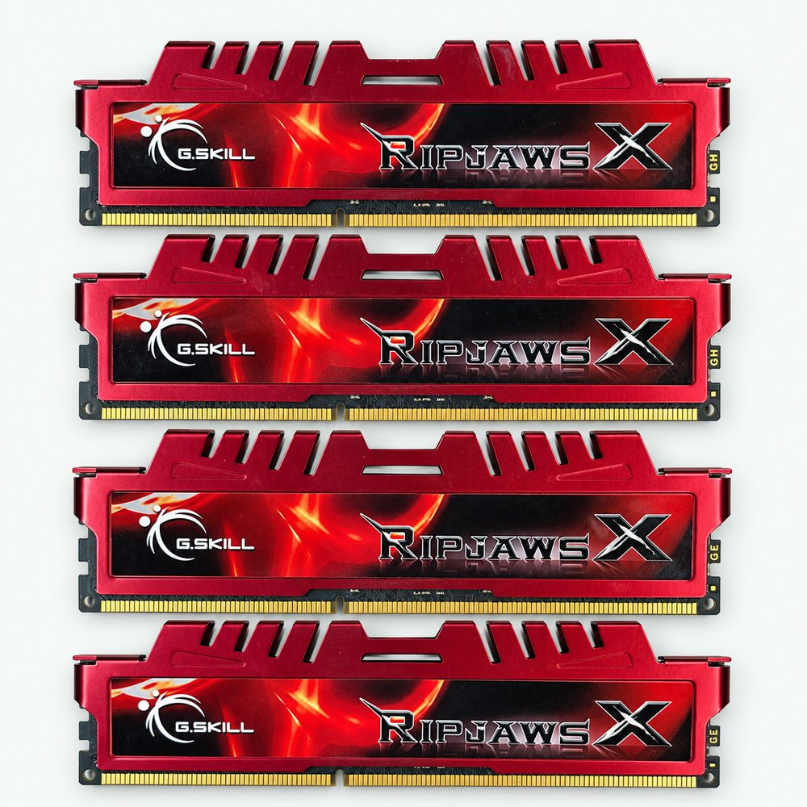
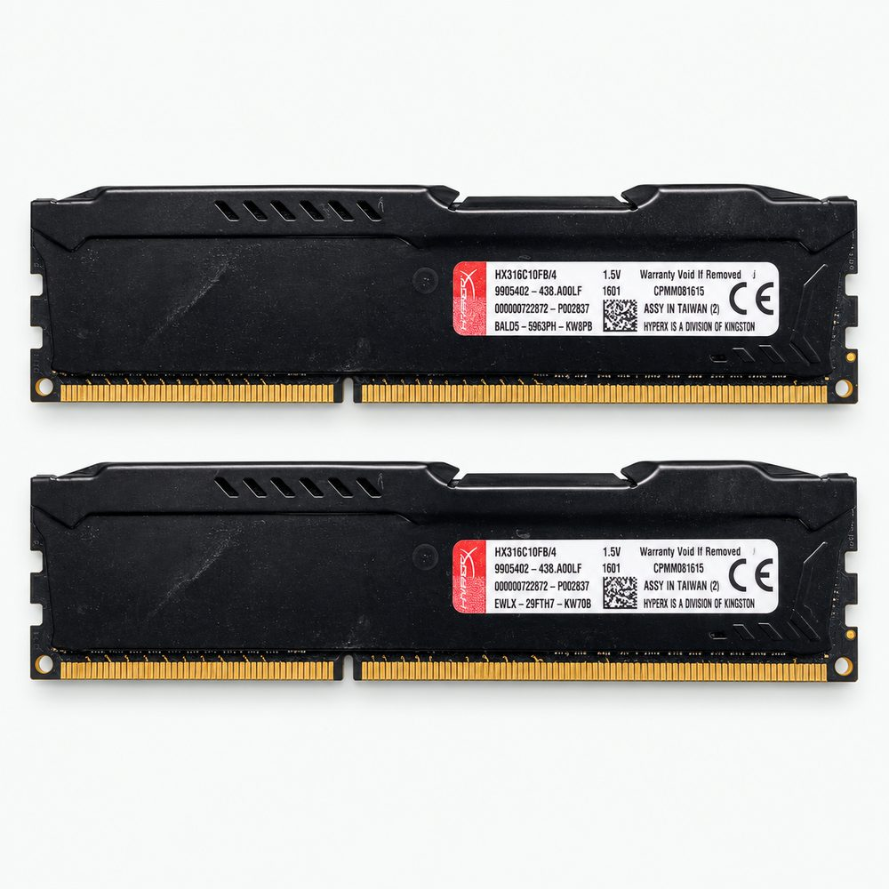
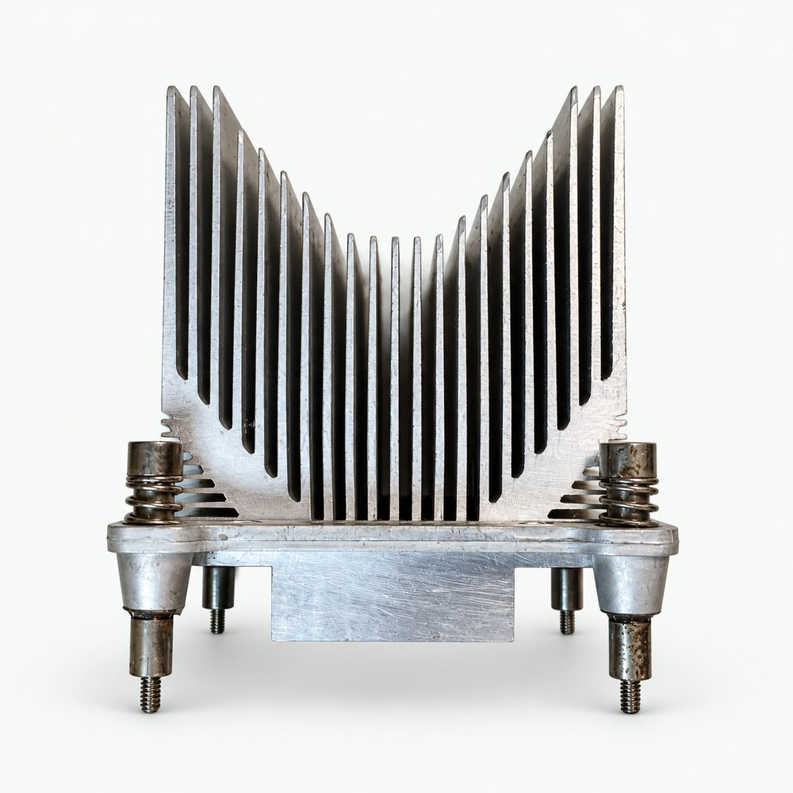
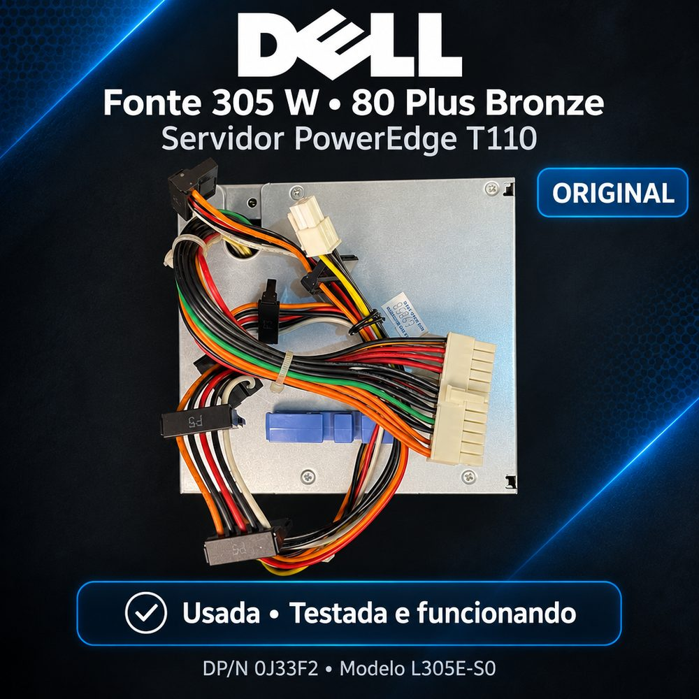
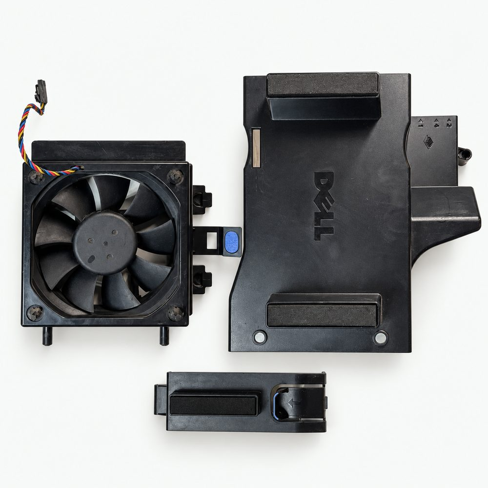
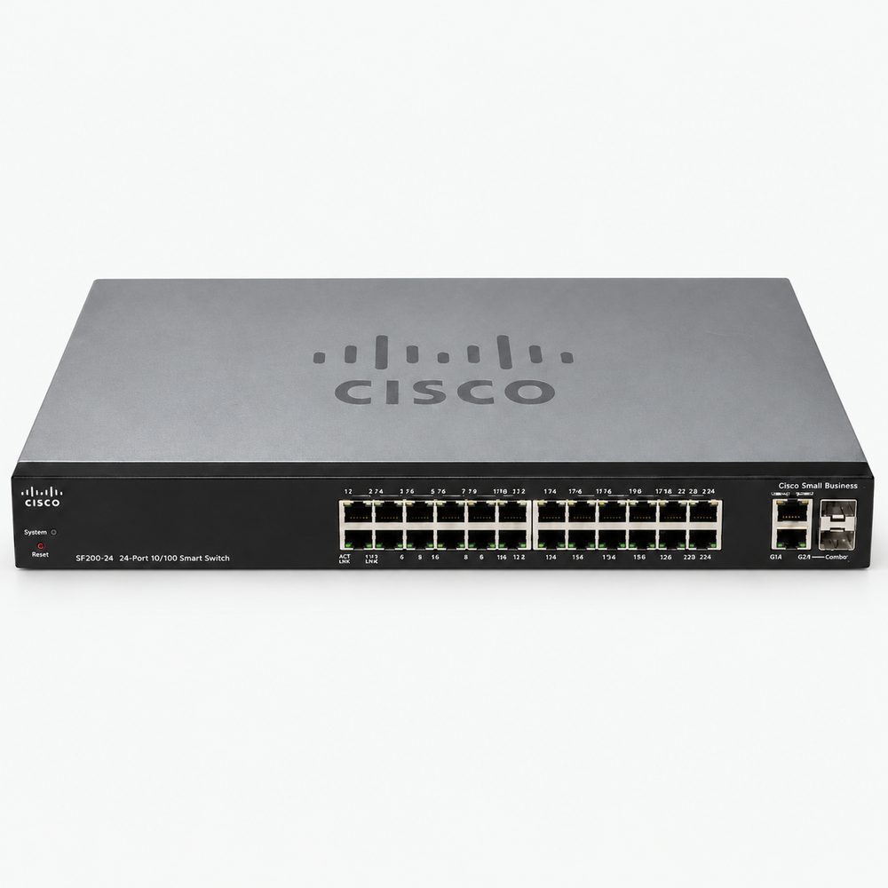

USADOMemórias
Conjunto Memória RAM G.Skill Ripjaws X 16GB (4x4GB) DDR3 1866MHz
Ripjaws X 16GB (4x4GB) DDR3 1866MHz
R$350Ver detalhes +
Ver anúncio na OLX ↗Ver no Mercado Livre ↗Uma nova história para a tecnologia
Memórias, componentes e equipamentos de rede usados para o seu próximo upgrade, reposição ou laboratório.
↗ Modelos e compatibilidade em destaque
◉ Estado e conteúdo descritos no anúncio
→ Compra pelas plataformas de venda
O que temos por aqui
Um catálogo de usados, com os detalhes
que ajudam a escolher.
12 produtos no catálogo
Preços em reais
USADOMemórias
Ripjaws X 16GB (4x4GB) DDR3 1866MHz

USADOMemórias
HyperX Fury Black HX316C10FB/4
 USADO
USADOMemórias
HyperX Fury Blue HX316C10F/4
 USADO
USADOMemórias
KTD-PE316ELV/8G
 USADO
USADOArmazenamento
Constellation ES.3 ST1000NM0033
 USADO
USADOPeças de servidor
PERC H200

USADOPeças de servidor
Dissipador PowerEdge T110

USADOPeças de servidor
L305E-S0

USADOPeças de servidor
Ventoinha, suporte e duto de ar PowerEdge T110
 USADO
USADOPeças e componentes
628553-001
 USADO
USADO
USADOImagens com tratamento de fundo e iluminação. Confira etiquetas e detalhes nas fotos do anúncio. Catálogo atualizado em 24/11/2026. A disponibilidade, o frete, as condições e o valor final devem ser conferidos no anúncio da plataforma.
Da escolha ao envio
O site apresenta os produtos. A negociação e a conclusão da compra acontecem na plataforma do anúncio.
Compare modelo, encaixes, especificações e compatibilidade com o seu equipamento.
Veja o estado da peça, o que acompanha e esclareça as dúvidas pelo chat da plataforma.
Confira o frete para o seu CEP e finalize a compra pela plataforma. Trabalhamos somente com envio.
Sobre a Usados e Tec
Uma loja voltada a peças e equipamentos de informática usados. Aqui, o foco é apresentar o que cada produto é, o que acompanha e quais cuidados de compatibilidade você precisa observar.
Desde uma memória DDR3 para reposição até equipamentos para montar seu laboratório de redes: escolha a peça a partir das informações do anúncio.
Algumas respostas úteis.
Não. Confira o padrão DDR, formato, capacidade, tensão e suporte da placa-mãe e do processador. Módulos ECC UDIMM exigem equipamentos compatíveis e não substituem automaticamente memórias comuns ou RDIMM.
As peças podem apresentar marcas de uso. O estado, os testes informados e o conteúdo de cada kit estão descritos nos anúncios. Confira essas informações e tire dúvidas antes de comprar.
A loja trabalha somente com envio. Veja as opções e o custo de frete na plataforma do anúncio.
Abra o anúncio do produto para consultar as condições atuais. O catálogo é uma apresentação dos itens e pode levar algum tempo para refletir uma venda ou alteração de preço.
Fale com a loja
Para uma peça específica, use o chat do anúncio.
Para falar com a Usados e Tec, envie um e-mail.